Ideation & Prototyping Week 9
Time Capsule #3 The Comic
For this week, I made up a cool little comic that tells a story of my time capsule being discovered 126 years later!

 First thing I did was a rough little script to outline how the story I had in my head would go along.
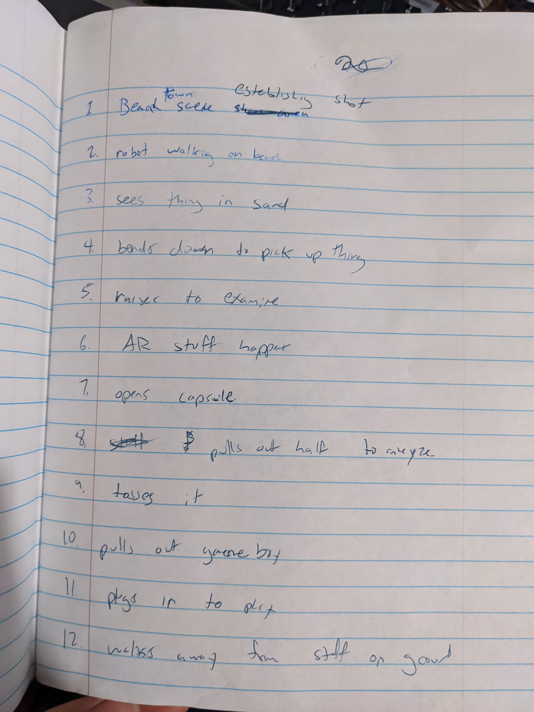
The next thing I did was sketch out some quick panels that would follow the outline I made. My story was more
focused on the visuals but my favorite comics are the ones that are much lighter on the text and tell the story a lot through the graphics.
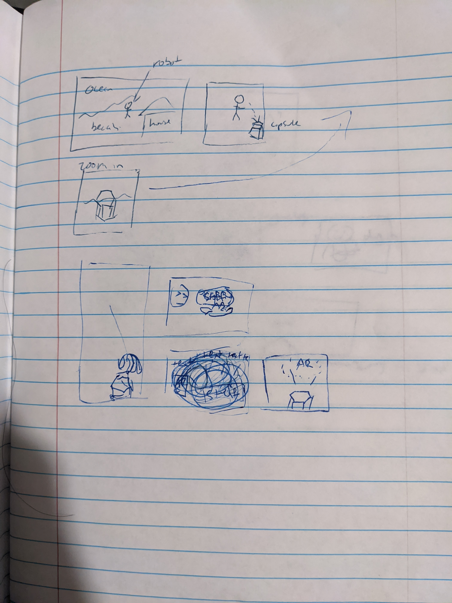
I started making an android character eariler this semester and set up a futuristic beach environment in hopes
of using it for a motion capture project, but I decided to make a game instead of doing a cinematic. This project
actually became a great excuse to go back to working on it. Made a couple changes here and there but actually followed
the storyboard closer than usual.
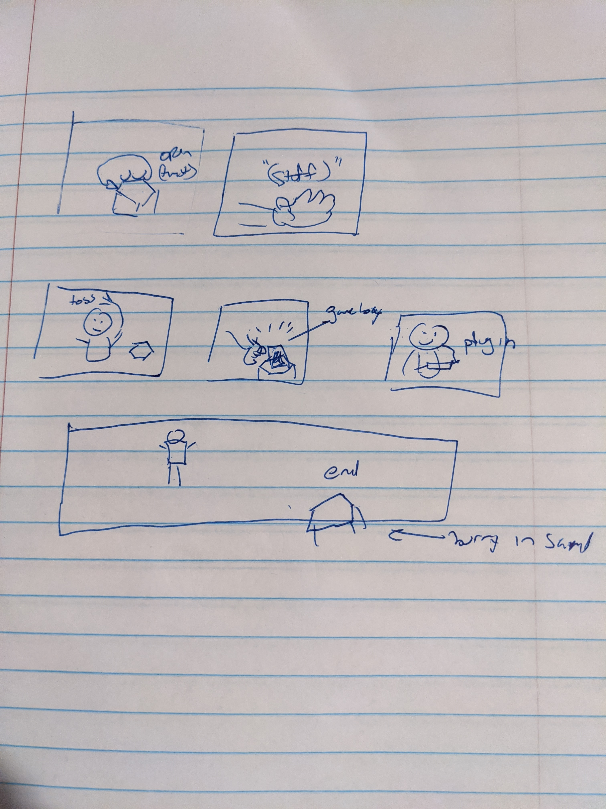
I kitbashed most of the parts from a package of models in Maya but then formed them into the shape of a female character
using Zbrush as well as group the parts into sections for each moveable piece.
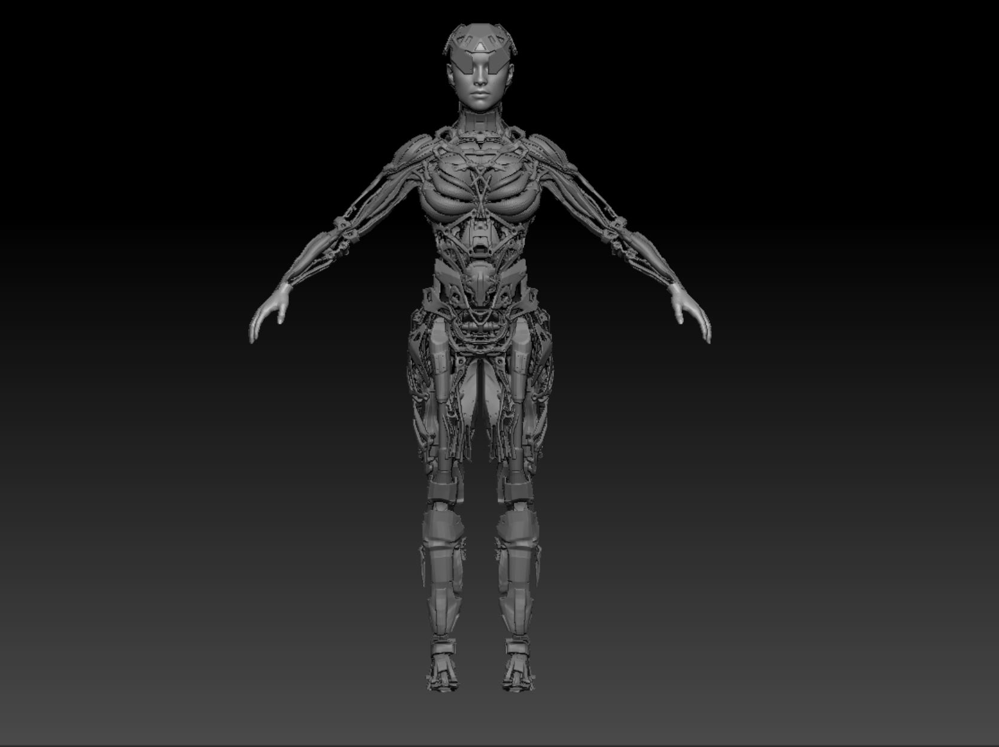
I brought it back into Maya and roughly attached the model to a premade skeleton which I used to pose for each of the panels. Even though the storyboard was pretty rough, it still came in handy for this stage. I also assigned some pieces
with different materials for some variation.
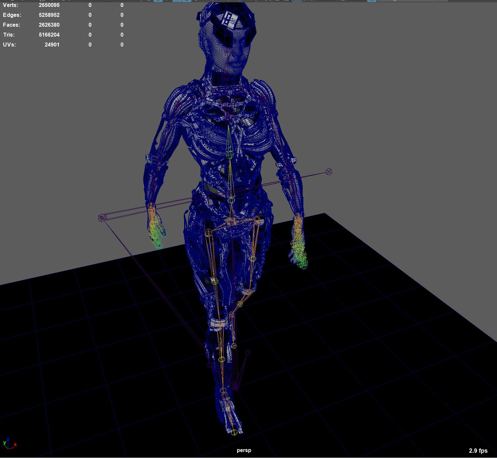
Then I brought it into Unreal Engine 4 where my level I modified was setup. From there I placed my character, virtual
time capsule and took renders trying to get a good composition with my virtual camera.
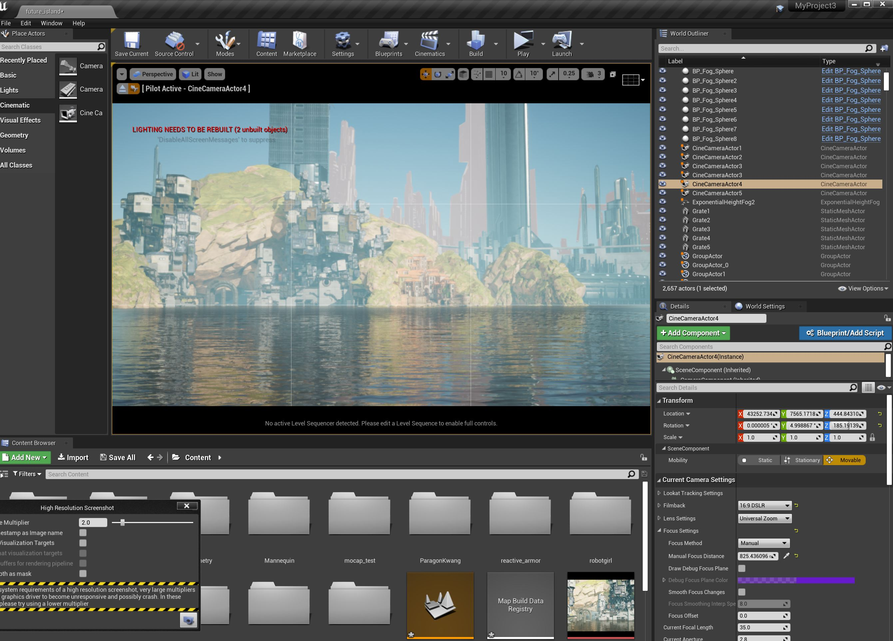
Once all that was done, I did some heavy editing in Photoshop to get some cool AR effects and tried to design some
aesthetic panels.
First thing I did was a rough little script to outline how the story I had in my head would go along.
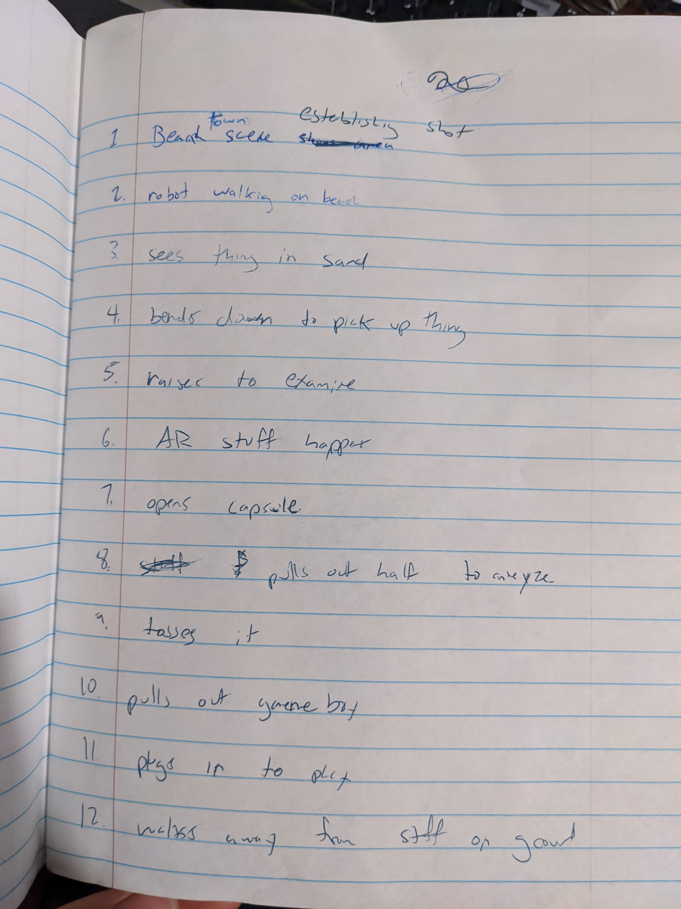
The next thing I did was sketch out some quick panels that would follow the outline I made. My story was more
focused on the visuals but my favorite comics are the ones that are much lighter on the text and tell the story a lot through the graphics.
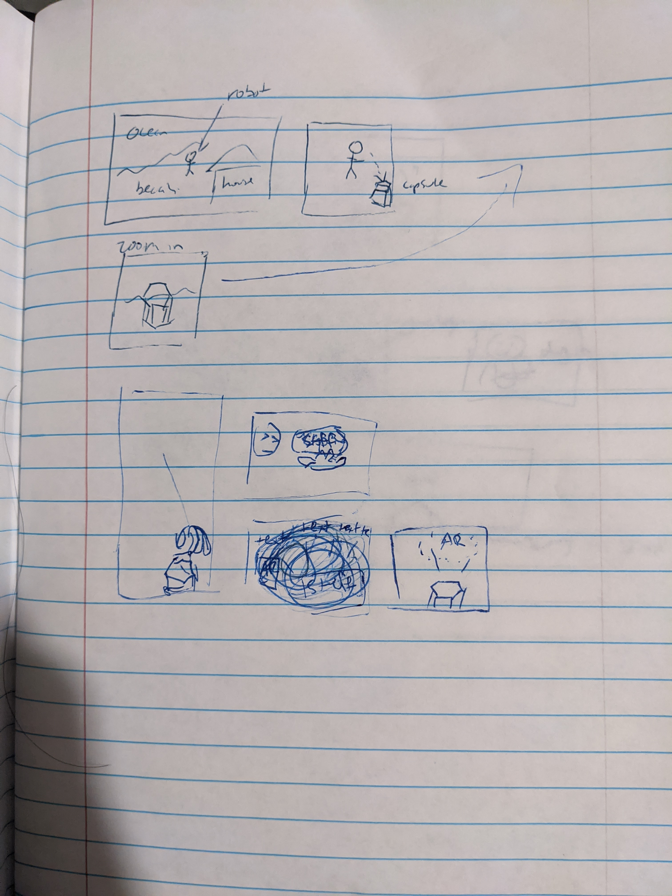
I started making an android character eariler this semester and set up a futuristic beach environment in hopes
of using it for a motion capture project, but I decided to make a game instead of doing a cinematic. This project
actually became a great excuse to go back to working on it. Made a couple changes here and there but actually followed
the storyboard closer than usual.
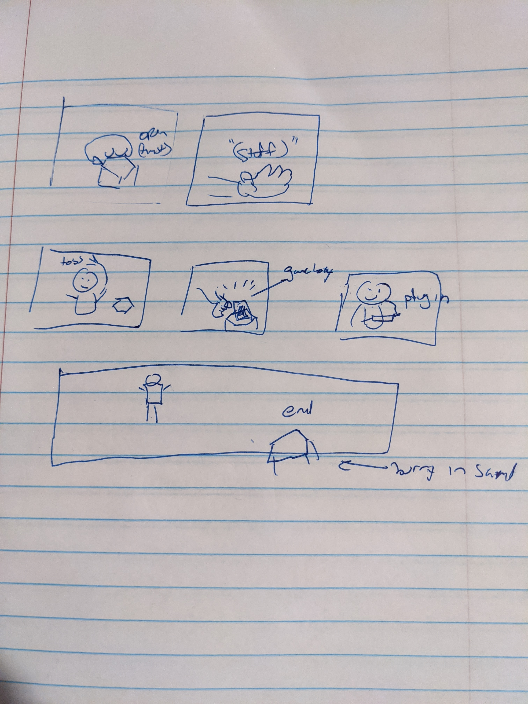
I kitbashed most of the parts from a package of models in Maya but then formed them into the shape of a female character
using Zbrush as well as group the parts into sections for each moveable piece.
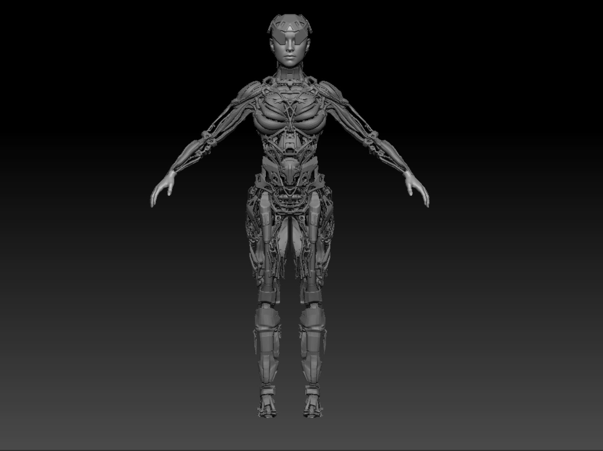
I brought it back into Maya and roughly attached the model to a premade skeleton which I used to pose for each of the panels. Even though the storyboard was pretty rough, it still came in handy for this stage. I also assigned some pieces
with different materials for some variation.
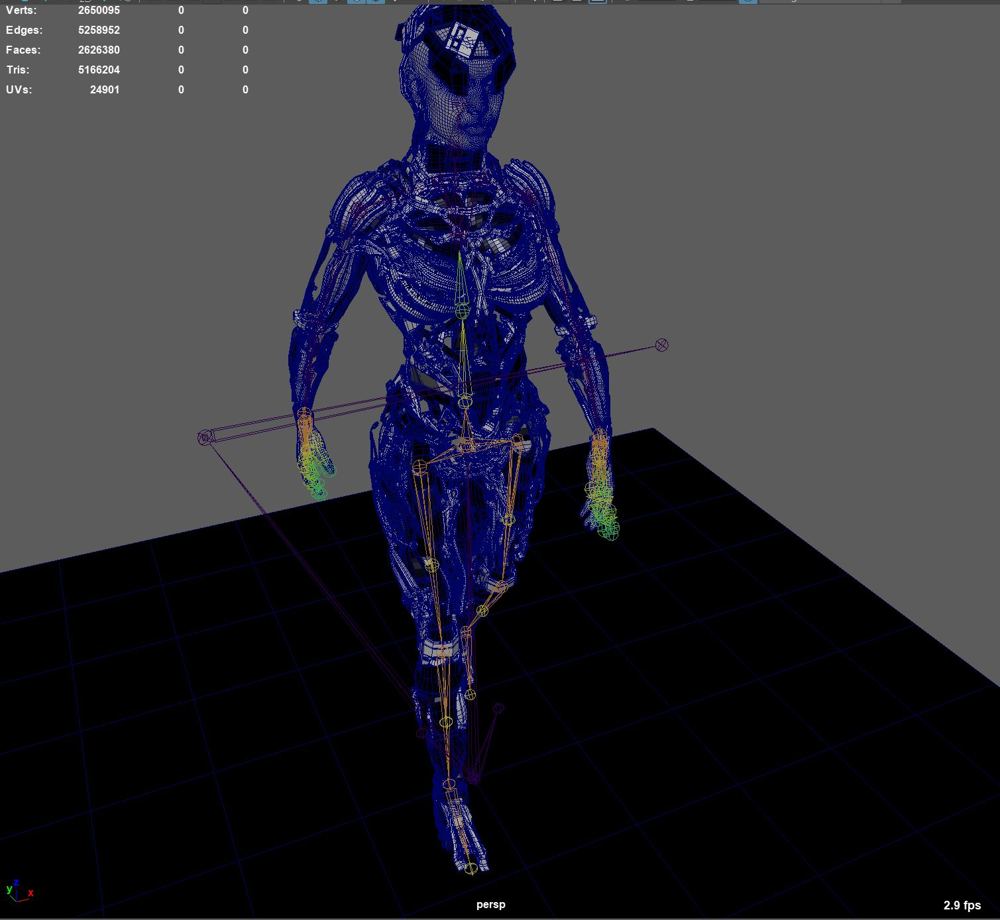
Then I brought it into Unreal Engine 4 where my level I modified was setup. From there I placed my character, virtual
time capsule and took renders trying to get a good composition with my virtual camera.
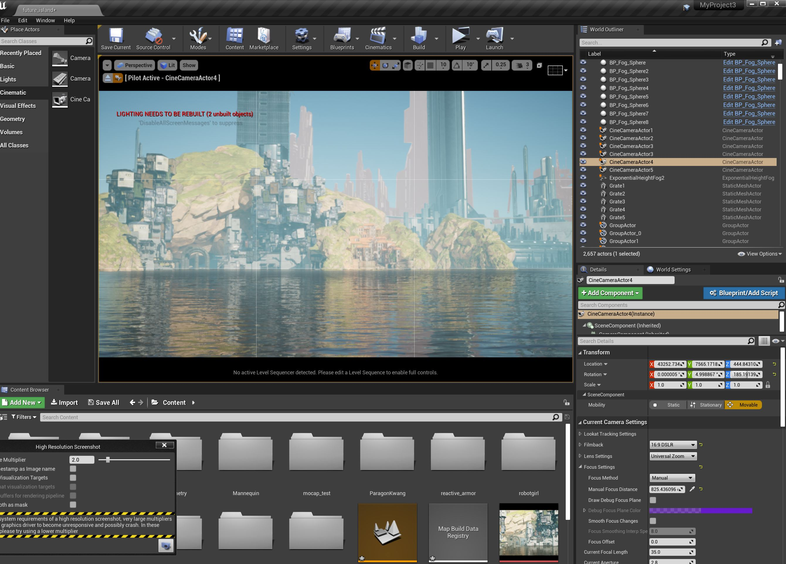
Once all that was done, I did some heavy editing in Photoshop to get some cool AR effects and tried to design some
aesthetic panels.
home
while (!deck.isInOrder()) {
print 'Iteration ' + i;
deck.shuffle();
i++;
}
print 'It took ' + i + ' iterations to sort the deck.';